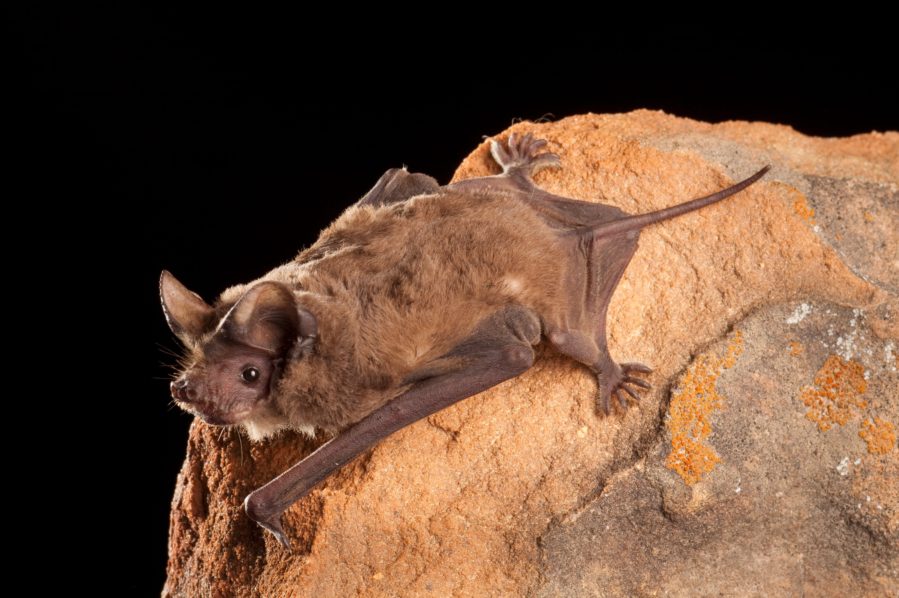

Tadarida brasiliensis
Mexican free-tailed bat
- Weight: 7-12g
- Length: 9cm
- Wingspan: 28-36cm
- Lifespan: 8-18 years
- Can be found in North America and South America
-
Dark brown or grey fur, large forward pointing ears and wrinkled
lips
-
Long tail which unlike in most bats extends freely beyond the
tail membrane
- Live in large colonies
- Use echolocation for detecting prey and navigating.
-
They are migratory bats, so they do not hibernate. During winter
most populations move to Mexico and Central America
-
Claimed to have the fastest horizontal speed of any animal,
reaching top ground speeds over 162 km/h
Learn more